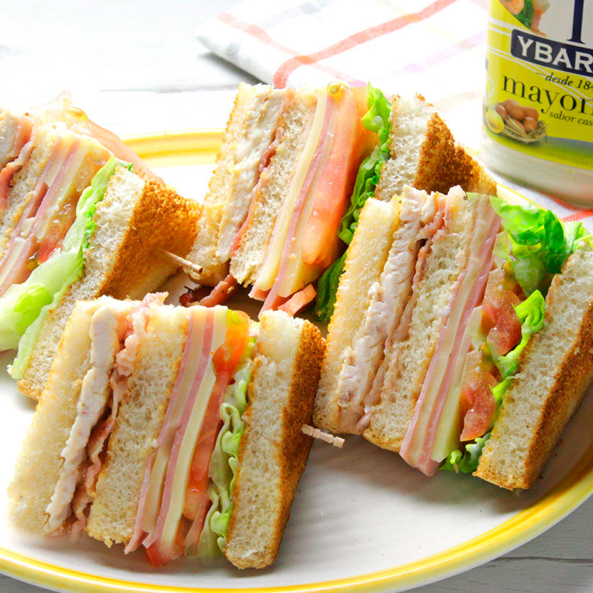

Receta de Sándwich de Jamón
Ingredientes

- 16 Rodajas finas de tomate
- 12 Rebanadas pan de molde
- 4 Lonchas de vuestro queso preferido para sándwich
- 4 Filetes de pollo
- 8 Lonchas de panceta o bacon
- 4 Lonchas de jamón cocido
- Salsa mayonesa (al gusto)
- Sal y pimienta negra recién molida (al gusto)
- Lechuga fresca
- Mantequilla
Método
Preparación del Sándwich
- El primer paso va a ser lavar las verduras, separando las hojas de lechuga y cortando unas rodajas finas de tomate natural. De esta manera ya las tendremos preparadas para el montaje del sándwich.
- Calentamos una sartén sin ningún tipo de grasa y añadimos la panceta. Cocinamos la panceta hasta que esté ligeramente crujiente. Reservamos.
- Calentamos una sartén con un hilo de aceite de cocinamos los filetes de pollo. Salpimentamos y reservamos. Untamos tres rebanadas de pan con mantequilla y las doramos en la sartén por ambas caras.
Preparación y presentación final del Sándwich
- Cogemos una de las rebanadas de pan y la untamos con mayonesa por una de sus caras. Con la parte untada hacia arriba, comenzamos a colocar ingredientes. Añadimos una loncha de jamón, una loncha de queso y un filete de pollo.
- Untamos una nueva rebanada de pan con mayonesa y la colocamos sobre el filete de pollo. Dejaremos la parte untada hacia arriba y continuamos con el resto de ingredientes. Colocamos una o dos rodajas de tomate fresco, unas hojas de lechuga y la panceta frita. Cubrimos con la última rebanada de pan que previamente habremos untado de ajonesa de ajo negro.
- Presionamos con la mano para que asienten los ingredientes. Pinchamos cada mitad del sándwich con un palillo para que luego al cortar no se nos desarme. Si queremos hacerlo en 4 porciones, tendríamos que utilizar entonces 4 palillos, uno para cada parte. Cortamos con un buen cuchillo y listo para degustar nuestro Sándwich. ¡Y qué os aproveche!